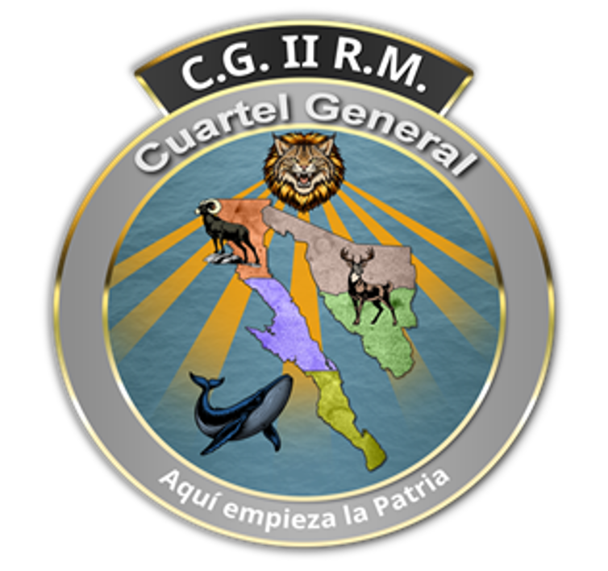

Centro Coordinador de Plan DN-III-E
II REGIÓN MILITAR
BAJA CALIFORNIA · BAJA CALIFORNIA SUR · SONORA
CICLÓN TROPICAL POLO
AVISO No. 26
FUENTE OFICIAL · SMN / CONAGUA
Última actualización mostrada
23 Sep. 2026 · 15:00 h (TCM)
Última actualización mostrada
23 Sep. 2026 · 15:00 h (TCM)
☁ Condiciones actuales
CategoríaHuracán categoría 4
Vientos máximos sostenidos230 km/h
Rachas280 km/h
Presión mínima central932 hPa
DesplazamientoNO (310°) · 11 km/h
⌖ Localización · Aviso 26
15.7° N · 102.4° O
240 km al sur-suroeste de Zihuatanejo, Gro.
420 km al sur-sureste de Manzanillo, Col.
240 km al sur-suroeste de Zihuatanejo, Gro.
420 km al sur-sureste de Manzanillo, Col.
⌖ Trayectoria oficial (SMN)

Imagen oficial obtenida de la publicación SMN/CONAGUA.
◉ Imagen satelital (SMN)

Fuente: Servicio Meteorológico Nacional / CONAGUA.
▣ Distancias / situación
240 kmal sur-suroeste de Zihuatanejo, Gro.
420 kmal sur-sureste de Manzanillo, Col.
Zona de prevenciónTécpan de Galeana, Gro. → Punta San Telmo, Mich.
Zona de vigilanciaOeste de Punta San Telmo, Mich. → Playa Pérula, Jal.
⌖ Pronóstico de evolución (SMN)
| Fecha/hora | Cat. | Viento/racha |
|---|---|---|
| 24/00 | 4 | 240/295 |
| 24/12 | 4 | 250/305 |
| 25/00 | 4 | 250/305 |
| 25/12 | 4 | 240/295 |
| 26/00 | 4 | 230/280 |
| 26/12 | 4 | 220/270 |
| 27/12 | 3 | 195/240 |
| 28/12 | 2 | 165/205 |
☁ Lluvias
Torrenciales
150–250 mmMichoacán y Guerrero
150–250 mmMichoacán y Guerrero
Intensas
75–150 mmColima
75–150 mmColima
Muy fuertes
50–75 mmSur de Jalisco y oeste de Oaxaca
50–75 mmSur de Jalisco y oeste de Oaxaca
≋ Viento y oleaje
70–90 km/h
Oleaje 6–8 mColima, Michoacán y Guerrero
Oleaje 6–8 mColima, Michoacán y Guerrero
40–60 km/h
Oleaje 2–3 mJalisco y Oaxaca
Oleaje 2–3 mJalisco y Oaxaca
⚑ Zonas de vigilancia
PREVENCIÓNPor efectos de vientos de tormenta tropical.
Técpan de Galeana, Guerrero, hasta Punta San Telmo, Michoacán.
Técpan de Galeana, Guerrero, hasta Punta San Telmo, Michoacán.
VIGILANCIADesde el oeste de Punta San Telmo, Michoacán, hasta Playa Pérula, Jalisco.